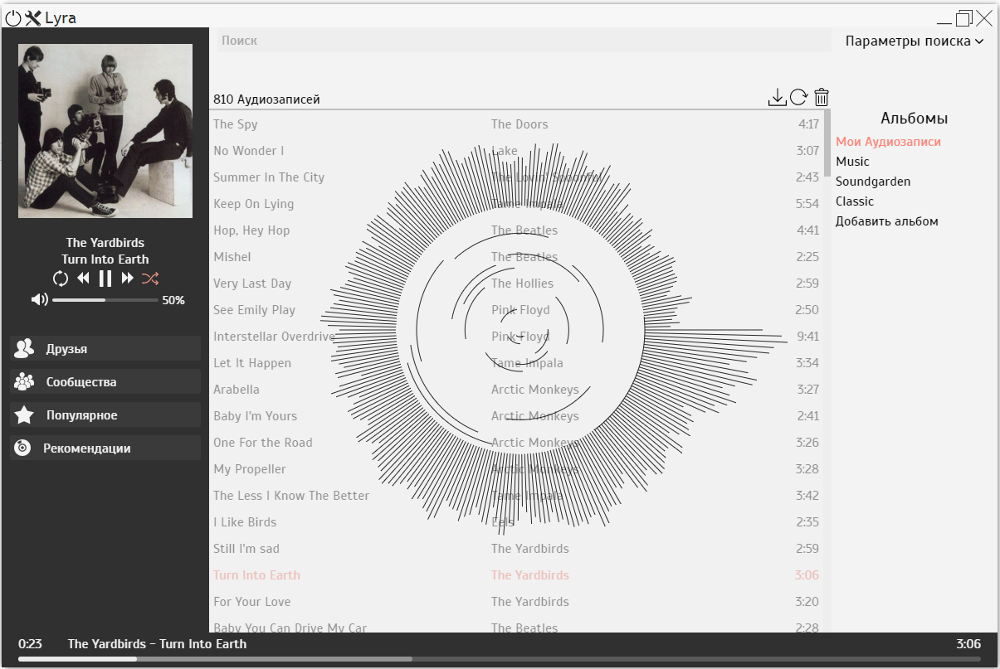

Music player with VK (russian social network) API integration. It has an audio visualizer, playlists and some other features. Lyra uses Electron framework so it's a crossplatform app. 
You may download Electron. Then you download Lyra repository, install node_modules with npm install and replace everything in electron/resources/default_app with Lyra repository.